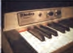
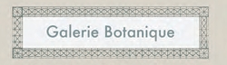
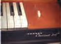

 |
The Rhodes piano is an
electro-mechanical piano, invented by Harold
Rhodes during the fifties and later
manufactured in a number of models ,first in colaboration with fender
and after 1965 by CBS it employs a piano-like keyboard with
hammers that hit small metal lines emplited by electromagnetic pickups. |
$1400 |
 |
The wurfitzer electric piano is an
electric-mechanical piano created by the Rudolp wurlizer company
of misissippi. The wurlitzer company itself never called the
instrument an "electric piano" and using this as trademark
throughout the production of the instrument,ii employs a piano-like
keyboard with hammers that hit small metal lines, ampliled by
electromagnetic pickups. |
$1600 |
 |
A clavinet is an electronicaly
amplifed clavichord manufactured by the Honner company.
Each key uses a rubber lip to perform a hammer on a string
its distinctive bright stacato sound is often compared to that
of an electric guitar various models were produced over the years
including the models I,II,L,C,D6, and E7
| $1200 |